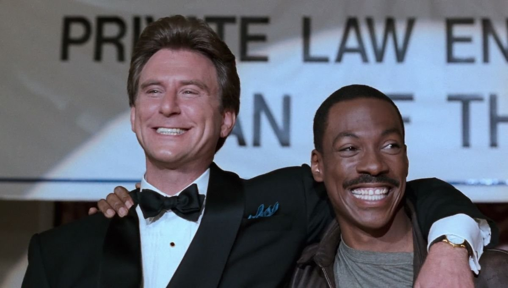
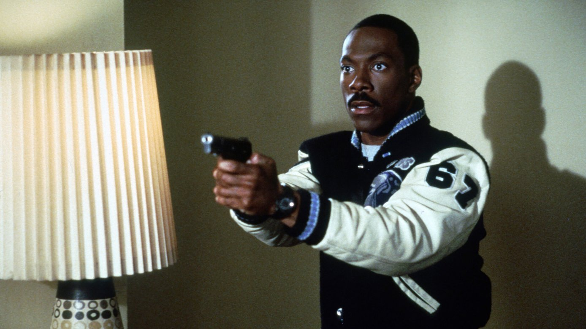

Celui-là, je l'ai découvert chez mon grand-père.
J'avais douze ans. La VHS était là, achetée, rangée parmi les autres cassettes. Je n'avais vu ni le premier ni le deuxième. Je ne savais même pas vraiment qui était Axel Foley.
Ce qui m'a attiré, c'est le résumé au dos de la jaquette. Un flic de Detroit, un parc d'attractions immense, et derrière les manèges et les mascottes, des choses très étranges qui se passaient en coulisses.
Un parc d'attractions qui cache un secret : à douze ans, il n'en fallait pas plus pour piquer ma curiosité.
Une fois de plus, je suis entré dans une saga par le troisième épisode. Et une fois de plus, c'était devant le lecteur de mon grand-père.
Ce soir, on retourne à Wonder World.

Le Flic de Beverly Hills 3 — affiche, 1994
Le Flic de Beverly Hills 3.
1994. Réalisé par John Landis. Avec Eddie Murphy, Judge Reinhold, Hector Elizondo et Timothy Carhart.
En 1984, Le Flic de Beverly Hills fait d'Eddie Murphy la plus grande star comique du monde. Axel Foley, flic de Detroit au rire contagieux et à la répartie sans limite, débarque chez les riches de Beverly Hills et met la ville sens dessus dessous. Trois ans plus tard, Le Flic de Beverly Hills 2, signé Tony Scott, transforme l'essai en grand film d'action stylisé.
Pour le troisième volet, Axel retourne une dernière fois en Californie. Cette fois, la piste d'un réseau de faux-monnayeurs le mène au cœur d'un parc d'attractions, Wonder World. Billy Rosewood est toujours là pour l'aider. Taggart, en revanche, n'est plus de l'aventure.
À la réalisation, John Landis retrouve Eddie Murphy, dix ans après Un fauteuil pour deux et sept ans après Un prince à New York.
Sur le papier, c'est la formule gagnante. À l'écran, c'est la suite la plus surprenante de cette saison spéciale : celle où le héros lui-même a changé. Moins insolent, plus sage. La question devient alors : une suite peut-elle survivre quand son héros perd ce qui le rendait unique ?
Au début des années 90, Eddie Murphy n'est plus tout à fait l'intouchable des années 80. Après les triomphes du Flic de Beverly Hills, d'Un fauteuil pour deux et d'Un prince à New York, ses films suivants rencontrent un accueil plus contrasté : Les Nuits de Harlem, 48 heures de plus, Boomerang. Pour Paramount, revenir à Axel Foley, le personnage qui a fait de lui une légende, semble la valeur sûre.
Le projet traîne pourtant plusieurs années. Plusieurs scénarios sont écrits puis abandonnés. Celui qui est finalement retenu est signé Steven E. de Souza, l'auteur de Commando et de Piège de cristal. Il est ensuite largement retravaillé à la demande d'Eddie Murphy lui-même.
Car la star a une idée précise : elle veut un Axel Foley plus mûr. Moins de provocations, moins de grossièretés, moins de numéros d'insolence. Un flic qui a grandi. Ce choix va changer profondément le ton du film.
À la réalisation, Paramount choisit John Landis. Les deux hommes se connaissent bien : ils ont tourné ensemble Un fauteuil pour deux et Un prince à New York. Leurs relations s'étaient pourtant tendues sur ce dernier tournage, et leurs retrouvailles sont attendues.
Le décor principal est trouvé en Californie : Great America, un vrai parc d'attractions de Santa Clara, alors propriété de Paramount. Il devient Wonder World, avec ses manèges, ses mascottes et ses coulisses. Le tournage s'y déroule en partie pendant les heures d'ouverture.
Côté casting, Judge Reinhold reprend le rôle de Billy Rosewood. John Ashton, le Taggart des deux premiers films, ne revient pas. Hector Elizondo arrive dans le rôle de Jon Flint, un nouveau partenaire, et Timothy Carhart incarne le méchant, Ellis DeWald. Landis, grand amateur de clins d'œil, glisse aussi dans le film plusieurs réalisateurs en caméo, dont George Lucas et Ray Harryhausen.
La musique est confiée à Nile Rodgers, qui réarrange le célèbre thème « Axel F » d'Harold Faltermeyer.
Le Flic de Beverly Hills 3 sort aux États-Unis en mai 1994. L'objectif : relancer la franchise, dix ans après le premier film.

Axel Foley, tout sourire, en pleine soirée de gala
Detroit.
Axel Foley mène une descente dans un garage clandestin qui maquille des voitures volées. L'opération tourne au drame : un mystérieux commando ouvre le feu, et quelqu'un de très proche d'Axel tombe sous les balles.
Les indices le conduisent une fois de plus en Californie, vers un endroit inattendu : Wonder World, un immense parc d'attractions familial, fondé par un homme que tout le monde surnomme affectueusement « Oncle Dave ».
En apparence, Wonder World est un monde de rêve : des manèges, des mascottes, des familles venues passer une belle journée. Mais derrière les décors, dans les coulisses et les sous-sols du parc, il se passe des choses beaucoup moins innocentes.
À Beverly Hills, Axel retrouve son vieil ami Billy Rosewood, désormais promu à un poste au titre interminable. Taggart a pris sa retraite, et c'est un nouveau partenaire, Jon Flint, qui accompagne Billy.
Pour remonter la piste, Axel va devoir s'infiltrer dans le parc, se mêler aux visiteurs, déjouer la surveillance du service de sécurité et convaincre une employée, Janice, de l'aider.
Et très vite, il comprend que les vraies attractions de Wonder World ne sont pas celles qu'on montre au public.
Un flic de Detroit, un parc d'attractions qui cache un secret, et une question qui traverse tout le film : que se passe-t-il derrière le décor quand les lumières s'éteignent ?
Le Flic de Beverly Hills 3 pose la question la plus délicate de cette saison spéciale. Die Hard 2, Rambo III et Superman III changeaient le décor, l'échelle ou le genre. L'Arme Fatale 3 ne changeait presque rien. Ici, c'est le héros lui-même qui a changé.
Le Axel Foley de 1984 était une tornade. Il mentait, provoquait, improvisait, riait au nez de tout le monde. Son insolence était son arme. En 1994, Axel est plus calme, plus posé, presque raisonnable. Eddie Murphy voulait un personnage qui avait mûri, et on le sent : il joue en retenue, comme s'il observait le film plus qu'il ne le menait. Pour beaucoup de spectateurs, c'était la perte de l'essentiel.
Mais le film a trouvé autre chose : son décor.
Wonder World est la vraie star du film. John Landis filme le parc comme un terrain de jeu et de danger à la fois : les manèges, les mascottes, les files d'attente, et derrière, les couloirs techniques et les ateliers cachés. Le contraste entre l'innocence affichée du lieu et ce qui se trame dans ses coulisses donne au film une atmosphère unique dans la saga.
La séquence du manège en est le meilleur exemple. Une attraction s'emballe, deux enfants restent coincés tout en haut, et Axel grimpe dans la structure pour aller les chercher. C'est l'une des scènes d'action les plus spectaculaires de la série, et elle tient entièrement au décor.
Landis apporte aussi son goût du clin d'œil : des réalisateurs en caméo, des attractions inventées avec soin, un humour plus familial et plus fantaisiste. Judge Reinhold reste attachant en Billy Rosewood, et Hector Elizondo apporte une présence rassurante.
Tout n'est pas réussi. Le méchant est assez fade, l'intrigue de faux-monnayeurs reste classique, et l'absence de Taggart se fait sentir. Le duo qui faisait le sel des deux premiers films n'existe plus vraiment.
Alors, une suite peut-elle survivre quand son héros perd ce qui le rendait unique ? Le Flic de Beverly Hills 3 n'y parvient qu'à moitié. Mais en déplaçant Axel dans un monde de manèges et de secrets, il offre une aventure différente, plus ludique, plus étrange, qui a son propre charme.

Axel Foley et son blouson de Detroit
Le Flic de Beverly Hills 3 n'a pas été oublié. Il a été mis de côté, presque renié.
Le box-office a donné le premier verdict. Un peu plus de quarante millions de dollars de recettes aux États-Unis, très loin des deux cent trente-cinq millions du premier film et des cent cinquante du deuxième. Pour la saga qui avait fait d'Eddie Murphy une superstar, la chute est spectaculaire.
La critique, elle, a été sévère. On a reproché au film d'avoir perdu ce qui faisait l'identité d'Axel Foley : son insolence, son rire, sa liberté de ton. Un Flic de Beverly Hills sans provocation, pour beaucoup, ce n'était plus vraiment un Flic de Beverly Hills.
Et le coup le plus dur est venu de l'intérieur. Avec les années, Eddie Murphy lui-même a pris ses distances avec le film et n'a jamais caché qu'il n'en était pas satisfait. Quand la star d'une saga désavoue l'un de ses épisodes, le public a tendance à suivre.
Le calendrier a fait le reste. En 1994, la comédie d'action a changé de visage, et Murphy lui-même s'oriente bientôt vers d'autres registres, avec Le Professeur foldingue deux ans plus tard. Axel Foley disparaît alors des écrans pendant trente ans. Quand il revient en 2024 avec Axel F sur Netflix, c'est en renouant avec l'esprit du premier film, comme si le troisième n'avait été qu'une parenthèse.
Pourtant, pour un enfant de douze ans qui ne connaissait pas les deux premiers, il n'y avait aucune comparaison possible. Il y avait un flic drôle et courageux, un parc d'attractions gigantesque, et un secret caché derrière les manèges.
Un film déclassé par sa propre saga, bien plus que par ce qu'il raconte.
Parce qu'il faut parfois regarder un film pour ce qu'il est, et non pour ce qu'on attendait de lui.
Le Flic de Beverly Hills 3 n'est pas le film culte de 1984. Il ne cherche pas à l'être. Regardé sans comparaison, comme je l'ai découvert à douze ans, c'est une aventure familiale, ludique et un peu étrange, qui joue avec un décor unique : un parc d'attractions qui cache un secret.
Parce que Wonder World reste l'un des décors les plus originaux du cinéma d'action des années 90. Les manèges, les mascottes, les files d'attente, et derrière, les couloirs et les ateliers interdits au public. Le film exploite à fond ce contraste entre le rêve affiché et ce qui se cache en coulisses. C'est exactement ce qui m'avait intrigué en lisant le dos de la jaquette, et ça fonctionne toujours.
Parce que la séquence du manège qui s'emballe, avec Axel qui escalade la structure pour sauver deux enfants, reste une vraie scène d'action, tournée dans un vrai parc.
Parce qu'il y a dans ce film un charme d'époque qu'on ne retrouve plus : des attractions construites pour de vrai, des caméos glissés par un réalisateur cinéphile, une musique qui réarrange le thème d'Axel F à la sauce années 90.
Et parce qu'il répond à sa manière à la question de cette saison spéciale. Une suite qui change son héros prend le plus grand des risques, et celle-ci en a payé le prix. Mais en perdant une partie d'Axel Foley, elle a gagné autre chose : une atmosphère, un lieu, un mystère. Pour ceux qui l'ont découvert en premier, c'est ça qui reste.
Le Flic de Beverly Hills 3 n'est pas Le Flic de Beverly Hills. Il ne cherche pas à l'être.
C'est une suite qui a pris le risque le plus grand de cette saison spéciale : changer le héros lui-même. Elle a rendu Axel Foley plus sage, plus calme, et on ne le lui a jamais pardonné. Mais en échange, elle lui a offert un terrain de jeu que personne d'autre n'avait : un parc d'attractions, ses manèges, ses mascottes, et ses secrets cachés derrière le décor.
Tout le monde vous dira que c'est le plus faible des trois.
Peut-être.
Mais moi, je l'ai découvert chez mon grand-père, à douze ans, sur une VHS rangée parmi les autres. Je ne connaissais ni le premier ni le deuxième. Je n'avais lu que le dos de la jaquette : un flic, un parc d'attractions, et des choses étranges qui s'y passaient la nuit.
Il n'en fallait pas plus. Pour moi, Wonder World était le plus grand parc du monde, et Axel Foley le seul à savoir ce qui s'y cachait vraiment.
Il y a des films qu'on aime pour ce qu'ils sont, et d'autres pour la curiosité qu'ils ont éveillée en nous. Celui-là, c'est la porte d'entrée d'une saga que je ne connaissais pas encore.
La cassette est dans le lecteur. On rembobine.
Titre original
Beverly Hills Cop III
Pays
États-Unis
Genre
Action / Comédie
Durée
104 min
Producteur
Paramount Pictures
Avec aussi
Hector Elizondo · Timothy Carhart · Theresa Randle
Musique
Nile Rodgers
Fil conducteur
Saison Spéciale — La suite qui change son héros
SOMEDAY — SPÉCIAL EP. 05